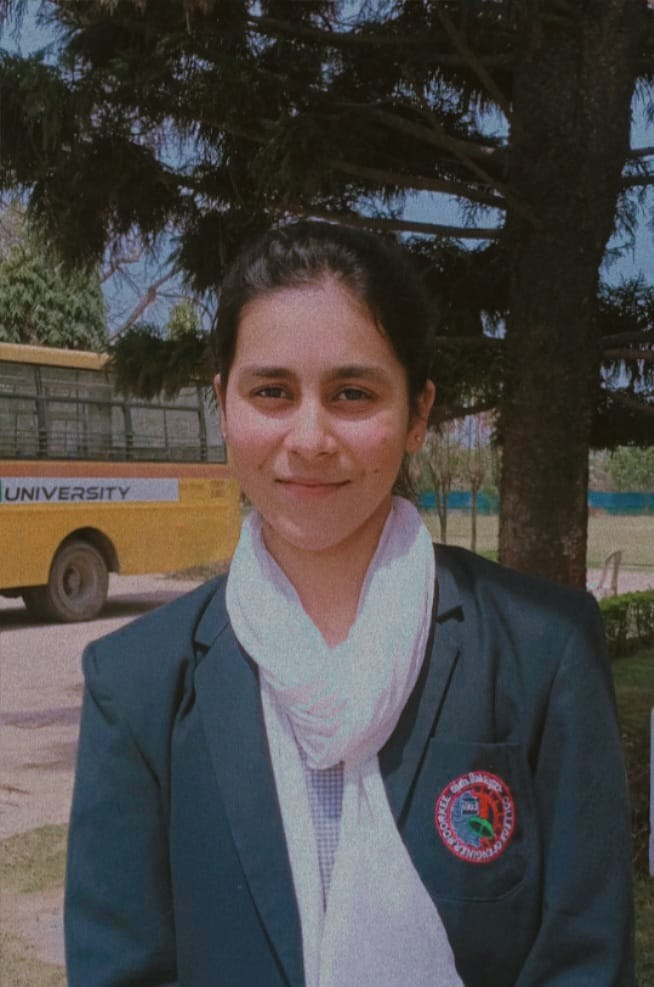

HEY!
I'M NAZIYA
I'M NAZIYA
ASPIRING WEB DEVELOPER
I am a final-year B.Tech CSE student passionate about web development, with expertise in front-end technologies like HTML, CSS, JavaScript,
and React. I enjoy building visually appealing, functional,
and responsive websites, focusing on creating seamless user experiences and optimizing performance to bring ideas to life on the web.
